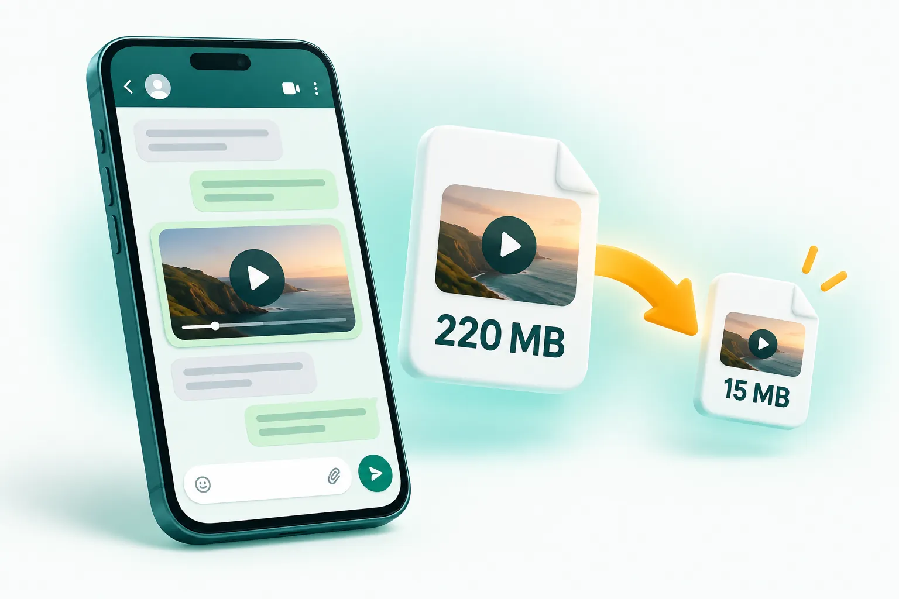

Blog / WhatsApp
WhatsApp video size limit: how to send long videos that still look good.

Videos sent the normal way (from the gallery or camera) are limited to about 16 MB and WhatsApp compresses them heavily. Sending as a document allows up to 2 GB with no compression, but the person has to download it before watching. For a video that plays instantly and looks sharp, compress it to just under 16 MB yourself first.
The two WhatsApp video limits explained
WhatsApp treats a video differently depending on how you attach it. If you pick it from the gallery or record it in the app, it goes through WhatsApp's media path. That path has a limit of around 16 MB, and WhatsApp also re-encodes the video to save mobile data, often down to 720p or lower. If you attach the same file using the Document option, WhatsApp sends the original file untouched, up to 2 GB.
| How you send it | Size limit | What happens to quality | Plays in chat? |
|---|---|---|---|
| Gallery / camera (normal video) | About 16 MB | Re-compressed by WhatsApp, often 720p or lower | Yes, instantly |
| HD option (when offered) | About 16 MB | Lighter compression, sharper result | Yes, instantly |
| Document | Up to 2 GB | Original file, no compression | Recipient downloads it first |
Neither option is perfect. The gallery route is convenient but can turn a crisp phone video into a smudgy one. The document route keeps quality but forces the recipient to download a large file, which is annoying on mobile data and not ideal for family groups.
Why your WhatsApp videos look blurry
Modern phones record a lot of data. One minute of 1080p video from an iPhone is roughly 60 MB, and 4K footage can be several hundred megabytes per minute. To squeeze that into a small file, WhatsApp lowers the resolution and the bitrate at the same time, using quick settings designed for speed rather than quality. Fast-moving scenes, low light and fine detail (grass, water, crowds) suffer the most.
The trick is to do the compression yourself with better settings before WhatsApp touches it. If the file is already under the limit and sensibly encoded, WhatsApp has far less reason to crush it.
How to send a long video on WhatsApp in good quality
- Open the WhatsApp video compressor on your phone or computer.
- Add your video. MP4 and iPhone MOV files both work.
- Leave the preset on WhatsApp (under 16 MB) and resolution on Auto.
- Tap Compress videos. Everything runs on your device, so there is no upload wait.
- On a phone, tap Share and choose WhatsApp. On a computer, download the file and send it through WhatsApp Web or Desktop.
Auto resolution matters more than people expect. A 3-minute clip squeezed into 16 MB looks better at 720p than at 1080p, because each frame gets more data. CompressPixel picks the step down automatically when the video is long.
How long a video fits in 16 MB?
It depends on motion and resolution, but these are realistic numbers for a typical phone clip with sound:
| Video length | Resolution that looks good | Notes |
|---|---|---|
| Up to 1 minute | 1080p | Sharp, close to the original on a phone screen |
| 1 to 3 minutes | 720p | Clean result, ideal for chats and groups |
| 3 to 6 minutes | 480p | Fine for talking-head videos and screen recordings |
| Longer than 6 minutes | Send as a document or split the video | Quality drops too far to fit in 16 MB |
Tips for better WhatsApp videos
- Trim first. Cutting a 2-minute video to the 40 seconds that matter gives every second three times more quality.
- Remove sound on silent clips. Audio uses space too; choose "Remove sound" if the clip does not need it.
- Use the document option for originals. If someone needs the full-quality file to edit or print, send it as a document instead.
- Keep your original. Compression creates a new file; your camera roll copy stays untouched.
Frequently asked questions
What is the WhatsApp video size limit in 2026?
Videos sent from the gallery or camera are limited to around 16 MB and are compressed by WhatsApp. Files sent as documents can be up to 2 GB and are not compressed.
How do I send a video longer than 3 minutes on WhatsApp?
Either compress it to under 16 MB at a lower resolution such as 720p or 480p, split it into parts, or send it as a document (up to 2 GB).
Does WhatsApp reduce video quality?
Yes. Normal video sends are re-encoded to save data, usually at 720p or lower. Compressing the video yourself first with better settings gives a sharper result.
Related guides
- How to send a large video by email
- Compress video without losing quality
- Compress images for WhatsApp